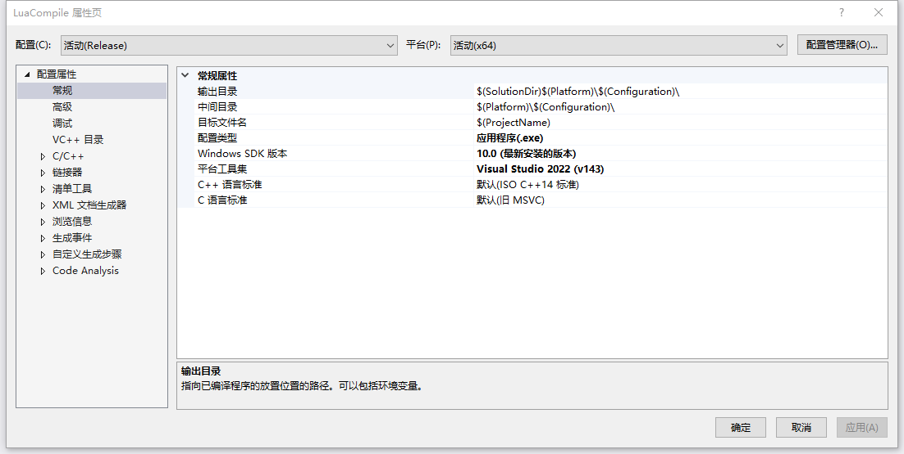
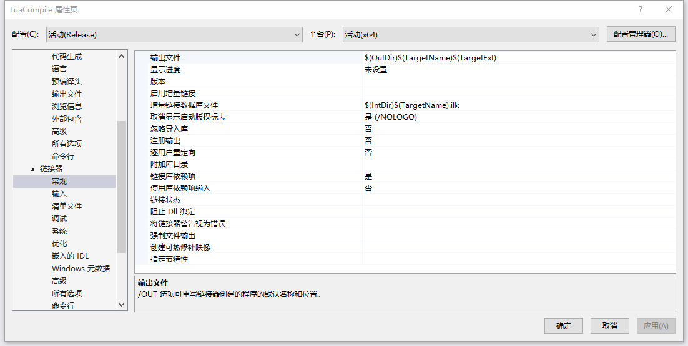

VS编译相关
Contents
VS编译相关
主要记录VS项目配置种跟编译流程相关参数。包括包含的库，链接的库，最后导出的目标路径，中间路径等。
- 首先，对于每个项目的属性都是分配置和平台的，在项目属性页的最上面配置表示。
- 其次会大量用到VS中的路径说明，这部分可以看路径说明那边结构。
本说明以空项目为例，主要说明几个常用的配置部分。
具体部分可以参考Microsoft官网 https://learn.microsoft.com/zh-cn/cpp/build/reference/c-cpp-building-reference?view=msvc-170
配置属性常规
| 属性名称 | 说明 |
|---|---|
| 输出目录 | 编译成最终文件后所在路径。例如.exe文件路径。 |
| 中间目录 | 中间文件存放路径。例如.obj文件路径。 |
| 目标文件名 | 最终编译出文件的名称。 |
| 配置类型 | 最终编译出文件的类型。例如应用程序(.exe)，动态库(.dll)，静态库(.lib) |
| Windows SDK版本 | Windows平台工具库，有些编译需要跟SDK对齐 |
| 平台工具集 | VS平台工具库，不同版本VS还有差异，有些编译需要跟平台库对齐 |
C/C++
主要是跟C/C++编译相关配置。主要用到两项
- 常规–附加包含目录
- 当有外部依赖的时候，实际需要在此处包含外部文件的头文件。
- 预处理器–预处理器定义
- 相当于在编译开始的时候调用#define XXX。定义对应的XXX宏，用来控制编译中可变过程。
链接器
主要是跟链接相关配置。
| 属性名称 | 说明 |
|---|---|
| 输出文件 | 链接完毕之后输出的文件目标 |
| 附加库目录 | 链接时添加外部库路径，有一些链接过程要依赖外部，在此引用库路径 |
其他部分
| 属性名称 | 说明 |
|---|---|
| 输入–附加依赖项 | 外部依赖库的名称 |
MSVC部分
参考官网说明 https://learn.microsoft.com/zh-cn/cpp/build/building-on-the-command-line?view=msvc-170